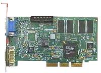
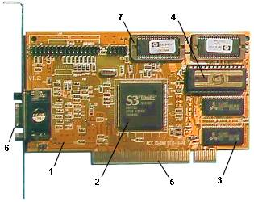
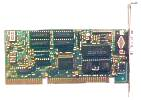
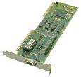
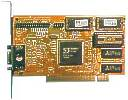
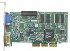

| Видеоадаптер является
устройством, непосредственно формирующим изображение на мониторе. |
 |
Тип видеоадаптера и его возможности определяют, в конечном виде, аппаратно
достижимые и поддерживаемые режимы работы всей графической системы, скорость
и качество формируемого на экране монитора изображения.
История развития
• Первая
IBM PC имела адаптер MDA (Monochrom Display Adapter) — алфавитно-цифровой,
с разрешающей способностью 720х350 пикселов. Экран имел 25 строк по 80
символов в строке.
• CGA
(Color Graphic Adapter) — цветной с поддержкой графического режима. Разрешающая
способность 320х200, 4 цвета.
• Hercules
(HGC – Hercules Graphic Card, 1982) — монохромный, разрешающая способность
720х350.
• EGA
(Enhanced Graphic Adapter, 1984) — поддержка 16 цветов из палитры в 64
цвета, разрешающая способность 640х350.
• PGA
(Professional Graphic Adapter) — поддержка 256 цветов из 4096-цветной палитры,
разрешающая способность 640х480, не получил широкого распространения.
• VGA
(Video Graphic Array, 1987) — разрешающая способность 640х480, поддержка
16 цветов.
• SVGA
(Surer Video Graphic Array) — разрешающая способность 1024х768, поддержка
256 цветов.
Устройство
Видеоадаптер представляет собой
монтажную печатную плату (1) с элементами крепления, на которой размещены
узлы устройства — процессор (2), видеопамять (3), система ввода/вывода
устройства (BIOS) (4); разъем для подключения адаптера к системной шине
(5), разъем подключения монитора (6), разъемы расширения видеопамяти (7)
и др.).

Режимы работы
Различают
два режима работы видеоадаптера — текстовый и графический.
В текстовом
режиме на экране отображается текст в виде символов, внешний вид которых
определяет знакогенератор карты. Каждому символу ставится в соответствие
число — его порядковый номер в наборе матриц знакогенератора, что определяет
раскладку таблицы символов. Всего таких символов в стандартной таблице
256 и нумеруются они от 0 до 255. Конкретное начертание набора называется
кодовой страницей, а несколько таких наборов для различных режимов — символьной
раскладкой или набором для соответствующей национальной спецификации.
Графический режим предполагает
изображение на экране монитора объектов произвольной формы и сложности.
В графическом режиме изображение кодируется как набор пикселов.
Видеоадаптер SVGA
SVGA является
современным стандартом для видеоадаптеров. Основные его особенности:
• использование
16- и 256-цветных режимов с разрешением 1024х768;
• применение
8-разрядных цифро-аналоговых преобразователей RAMDAC;
• возможность
расширения видеопамяти до 8 Мбайт;
• поддержка
аппаратного курсора;
• 16-разрядная
шина данных;
• 16-разрядный
видеоBIOS;
• двухпортовые
микросхемы памяти (VideoRAM);
• программируемый
кварцевый генератор и т.д.
Развитие
SVGA нацелено на повышение производительности по графическим операциям.
Например, при работе в Windows (в режиме 1280х1024, 256 цветов) объем статической
картинки 1,3 Мбайта с частотой 72 Гц требует скорости передачи 92 Мбайта/с.
Повышение производительности обеспечивается за счет повышения производительности
системной шины, совершенствования микросхем видеопамяти, использования
блочной системы видеопамяти, применения графических акселераторов. Ниже
показаны видеоадаптеры SVGA для разных типов системной шины.
|

|

|

|

|
|
шина ISA
|
шина VLB
|
шина PCI
|
шина AGP
|